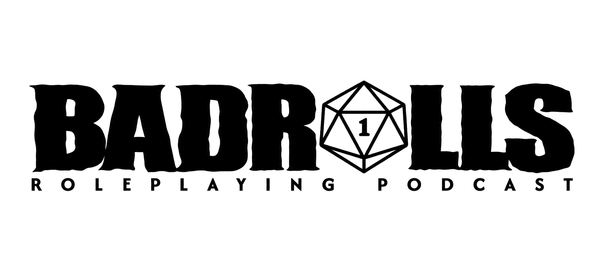

D20
PODCAST DE ROL · TIRADAS MALAS · HISTORIAS PEORES

Un podcast sobre juegos de rol, partidas, diseño, anécdotas y todo lo que ocurre cuando los dados deciden arruinar un plan perfecto.
ÚLTIMA TIRADA
Episodio destacado
SIN CRÍTICOS NO HAY HISTORIA
El manifiesto
Aquí no venimos a explicar cómo se debe jugar. Venimos a hablar de cómo jugamos, por qué seguimos haciéndolo y de todas esas historias que solo existen porque alguien lanzó un dado en el peor momento posible.
LOS CULPABLES
Detrás de los micros
Ángelvs Master
Director de juego, creador de campañas y coleccionista de problemas que los jugadores resolverán de una forma completamente distinta a la prevista.
Fomor
La otra mitad de Badrolls. Rol, criterio, discusión y combustible suficiente para convertir cualquier tema en una tirada enfrentada.